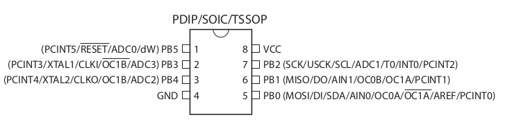
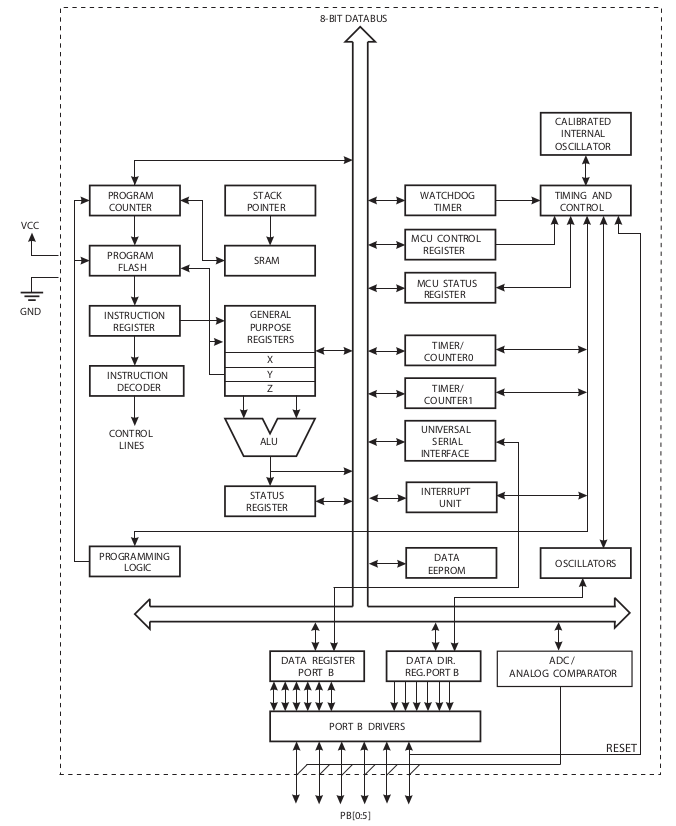
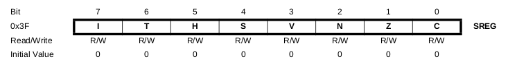
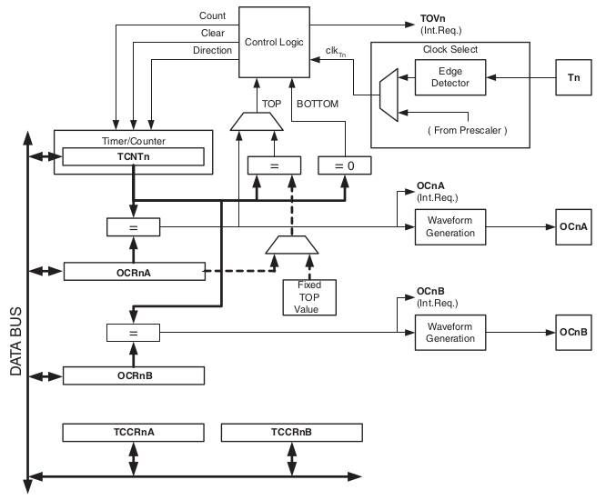
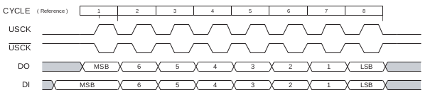
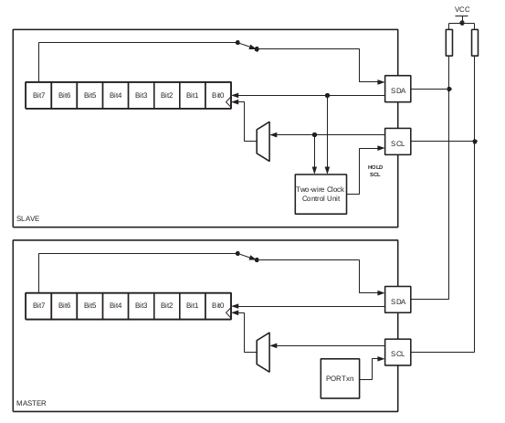
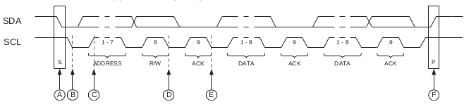
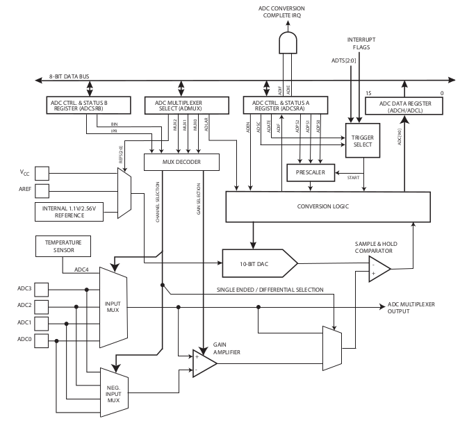
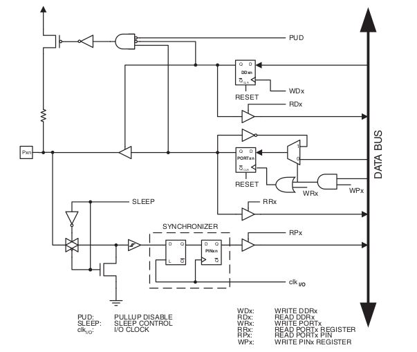
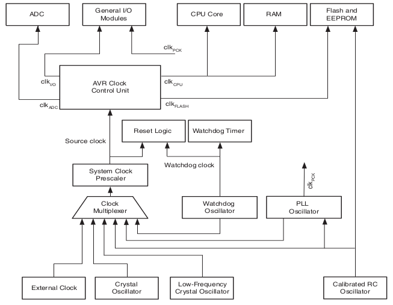

Microcontroladors#
Pàgina en desenvolupament
Encara estem treballant en aquest document.
Esperem oferir-vos properament el seu contingut.
Disculpeu les molèsties.
Segons la Viquipèdia
Un microcontrolador (abreujat µC, uC o MCU) és un petit ordinador en un sol circuit integrat especialitzat a controlar equips electrònics, que inclou una CPU (unitat central de processament), una petita quantitat de memòria, unitats d’E/S (Entrada/Sortida) i acostuma a portar una memòria FRAM, NOR flash o una ROM per guardar-hi el programa.
Com veieu integra un microprocessador o CPU. Podem dir que un microcontrolador és com un petit ordinador en un xip.
De vegades aquest microcontrolador es comercialitza en un mòdul que incorpora algun components auxiliars, com ara una memòria flash, una interfície USB/sèrie, una antena WiFi en PCB… És el cas del ESP12F del Wemos D1 mini, que porta un microcontrolador ESP8266. En aquest cas parlem d’un SoC (System-on-a-chip)
ATtiny85#
Per veure els diferents components d’un microcontrolador he escolit el ATtiny85, un modern i petit microcontrolador de 8 bits que es pot programar amb l”Arduino IDE.

Característiques:
Arquitectura RISC: 120 instruccions, 32x8 registres de propòsit general.
Memòries de programa i dades no volàtils: 8 KB memòria de programa flash (10 000 cicles w/E); 512 bytes EEPROM (100 000 cicles W/E).
512 bytes SRAM
Temporitzador/comptador de 8 bits i dos canals PWM
Temporitzador/comptador d’alta velocitat i 2 canals PWM d’alta freqüència
Interfície Sèrie Universal (USI)
ADC de 10 bits, multiplexat a 4 canals
Watchdog programable
6 pins I/O programables
Oscil·lador intern calibrat
Aquest és el seu diagrama de blocs:

Anem a veure que vol dir tot això
Arquitectura RISC#
L’arquitectura computacional descriu l’estructura operacional fonamental del microprocessador. Tenim diferents tipus: Harvard, von Neumann, CISC, RISC…
Un microcontrolador RISC reconeix un nombre reduït d’instruccions de codi màquina. Utilitzen menys transistors, són més barats, més ràpids i dissipen menys calor.
Registres de propòsit general#
Els GPRs (General Purpose Registers) poden guardar tant dades com adreces. L’Attiny85 en té 32 bytes, però podem accedir individualment a cada bit.
Aquests registres es poden connectar amb l”ALU o Unitat Aritmètica Lògica.
En el cas de l’ATtiny85 els darrers 6 GPRs estan agrupats en parelles (X, Y, Z) de 16 bits i permeten adreçar indirectament l’espai de dades.
Altres registres tenen un ús específic, com el registre SP (Stack Pointer). Format per la parella SPH i SPL que gestionen la pila on s’emmagatzenen dades i adreces de retorn per interrupcions i subrutines.
Un dels registres més importants d’un microcontrolador és el registre d’estat SREG

bit |
Nom |
Funció |
|
|---|---|---|---|
7 |
I |
Global Interrupt Enable |
Habilita les interrupcions |
6 |
T |
Bit Copy Storage |
Memòria intermèdia en la còpia de bits |
5 |
H |
Half Carry Flag |
transport o prestat aritmètic a partir del nibble més baix |
4 |
S |
Sign Bit |
s’activa en determinades operacions |
3 |
V |
Two’s Complement Overflow Flag |
s’activa quan el resultat excedeix un byte |
2 |
N |
Negative Flag |
indica un resultat negatiu |
1 |
Z |
Zero Flag |
s’activa quan l’operació dona zero |
0 |
C |
Carry Flag |
transport o prestat aritmètic |
Memòria no volàtil#
Típicament memòries EEPROM o flash EEPROM on es desa el programa i les dades. Es degraden en el procés d’escriptura i esborrat (W/E).
Les memòries flash són més barates i grans, però es degraden més ràpidament. A més a més s’escriuen i esborren en blocs, en el cas de l’ATtiny de 64 bytes, incrementant aquest fenòmen.
Memòria RAM#
Els microcontroladors tenen una memòria RAM molt limitada.
Les memòries RAM poden ser de dos tipus:
SRAM, estàtiques : manté el seu contingut inalterat mentre es mantingui alimentada elèctricament. Utilitzen biestables per emmagatzenar els bits.
DRAM, dinàmiques: cal refrecar el contingut de la memòria ja que es degrada amb el temps: típicament els bits s’emmagatzemen en condensadors, més barat. La complexitat d’aquest procés de refresc les descarta per als microcontroladors.
Temporitzador/comptador de 8 bits i dos canals PWM#

L’Attiny té dos comptadors, que es poden decrementar o incrementar amb un senyal de rellotge.
Si utilitzem com a rellotge el CLK del sistema, actuen com a temporitzadors. Així podem mesurar el temps transcorregut o generar un senyal PWM.
Si utilitzem un senyal extern (pin T0) actuen com a comptadors.
Com el rellotge del sistema és molt ràpid, tipicament s’utilitza un prescaler que divideix el CLK per 8, 64, 256 o 1024.
USI: interfície sèrie universal#
Permet comunicar el microcontrolador amb altres dispositius per enllaç sèrie. Tenim diferents configuracions:
SPI#
El bus SPI utilitza tres pins: rellotge (USCK), entrada (DI) i sortida (DO). Es tracta d’una comunicació síncrona full-duplex, on les dades es llegeixen de DI en el flanc de pujada de USCK i s’escriuen a DO en el flanc de baixada.

I2C#
Utilitza 2 pins: SCL (rellotge) i SDA (dades). Les connexions són de drenador obert amb pull-ups, permeten conectar diferents dispositius al mateix bus.

Els paquets I2C s’inicien amb una capcelera que indica l’adreça del dispositiu a que va dirigit la transmissió. Com el darrer bit d’aquesta capcelera indica si la transmissió és de lectura o escriptura, podem comunicar-nos amb 128 dispositius pel mateix bus.

UART#
Utilitza 2 pins configurables per la transmissió asíncrona, un per a cada sentit.
ADC#
Un ADC o convertidor analògic-digital ens permet tenir un valor digital, en aquet cas en el rang 0-1023, proporcional a a tensió mesurada en un pin.
Normalment els microcontroladors tenen només un bloc ADC, però poden mesurar diferents pins gràcies al multiplexat.

Per mesurar la tensió d’entrada s’utilitza un algorisme d’aproximacions succesives on la tensió d’entrada es compara amb el senyal generat per un DAC, conversor digital analògic. Un DAC és relativament fàcil d’implementar amb un operacional i unes resistències. Amb un comparador es detecta si el senyal d’entrada és superior o inferior al generat.
Al simulador podeu veure una implementació d’un DAC de 4 bits (LSB a l’esquerra, MSB a la dreta) amb un convertidor d’escala R-2R
Show code cell source
%%html
<iframe src="https://www.falstad.com/circuit/circuitjs.html?ctz=CQAgjCAMB0l3BWEAWWB2AHAtaDMCEBOXE3DEANmRCQUhoFMBaMMAKDAvtwCZxlqvED2T16PemHjT4HLuDB8wAhXxFjhkmTLmTCSlWH3DRUTeG3S2Ac3AUTk+zwzkxNkISenPwl2cjuYGheksG+rlBsAO4o5EZ8VODGATHI5Oqxwgj2KZk82eDOWTnRhekFiummuZXFmuUlMRIN9Q6RMYnxlIIS7WVJBtRdNYbGyj1uTZBxxjwiA31zQ7PzvG4AMt0ga1v4fBoAZgCGADYAzgw0kZvj2723e-4gx+eXSAGbS3fiqwj7Zi8LlcAgAnO78HogDAaKRWMGsQaqKEwnTwsajPjQsyw2RgoRYhHIsx0XFIgnGLH0ElwNgAeRQnC2aXonXAbDxkGoLHsyEZ3OJVlsuE5EO2IqCOUiRzF1ESvPsiTi9BYWhk22gRkImAkkH0dEweGYhHVmrQ+jgGFwhEICAwYAQRosqPBWKYaSJVLhIDd5Fd7tuqtknGV-pUPra4kDllKTCEXX5wxjjPjjJ2AVsTESGUz1GcEQ+3tTvX5j0OpyB7zYACVC4o6tzxAUNKYeNAm-42zGhNnu02u2oCu78o0ZYX7MLqO7cvKxwyFdRQaOHiLKU7SSnxyL+eJ8MLAsYE2NJYuWEVbqffSjBYWz2HahL-Emin7L30uliJx6k3Xh97eyUgA" width="800" height="600"></iframe>
Watchdog#
És un circuit temporitzador que provoca un reset del microcontrolador si es bloqueja degut a alguna condició de fallada, normalment un error en el codi.
Quan el programa s’executa normalment el comptador del watcdog es reseteja constantment, per exemple amb l’ordre delay(). Si no es reseteja el comptador arriba al valor màxim i fa un reset del microcontrlador. El microcontrolador torna a ser operatiu i surt del bloqueig.
Pins I/O#
Els pins d’entrada/sortida permeten llegir i escriure valors digitals. Normalment es pot seleccionar la direcció d’entrada o sortida i moltes vegades tenen pull-ups programables.

Oscil·lador intern#
Encara que la majoria de microcontroladors poden utilitzar un cristall extern com a referència per generar el rellotge del sistema, normalment s’utilitza un oscil·lador intern. No és tan precís, però deixa lliure els dos pins de l’oscil·lador intern per a altres connexions.
